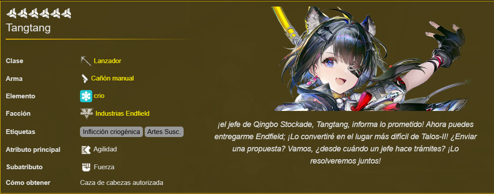
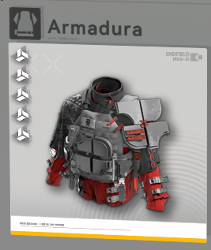
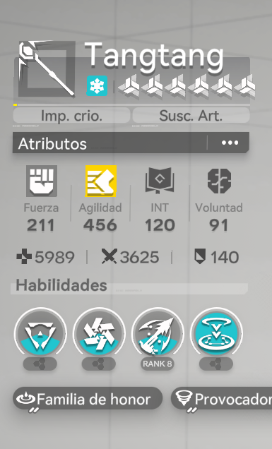
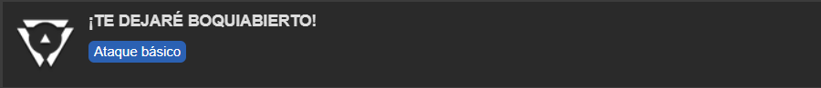
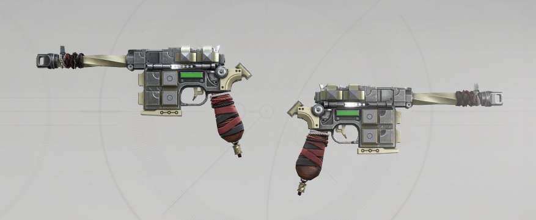

Build de la jefesita
Tangtang is a 6★ Cryo Caster Operator and the Supreme Chief of the Qingbo Stockade in Arknights: Endfield. She is a Handcannon user who can apply Cryo Infliction icon.pngCryo Infliction and deal DMG to a crowd of enemies. Her combo skill is triggered by Cryo Infliction icon.pngCryo Inflictions or Arts Bursts, and is capable of enhancing Arts Susceptibility icon.pngArts Susceptibility and DMG dealt by subsequent battle skills and ultimates.

| Atributo / Pieza | Recomendación | Prioridad | |||||||
|---|---|---|---|---|---|---|---|---|---|
|
 Armadura |

Guantes |


Kits de Apoyo |
|||||||
|
 |

|

|
|||||||
| Habilidades de combate | |||||||||
|
 |
|||||||||
| Ataque basico: | Un ataque con hasta 5 secuencias que trata Crio DMG. Como operador controlado, Golpe final también ofertas 18 Escalonar. | ||||||||
| ATAQUE DE BUCEO: | El ataque básico realizado en el aire se convierte en un ataque en picado que se ocupa Crio DMG a los enemigos cercanos. | ||||||||
| FINALIZADOR: | Un ataque básico realizado cerca de un enemigo escalonado se convierte en un remate que se vuelve masivo Crio DMG y recupera algo de SP. | ||||||||
| Nivel: | 1 | 2 | 3 | 4 | 5 | 6 | 7 | 8 | 9 |
| Multiplicador BATK SEQ 1 | 23% | 25% | 27% | 29% | 32% | 34% | 36% | 39% | 41% |
| Multiplicador BATK SEQ 2 | 25% | 28% | 30% | 33% | 35% | 38% | 40% | 43% | 45 |
| Multiplicador ATK de acabado | 400% | 440% | 480% | 520% | 560% | 600% | 640% | 680% | 720% |
| Arma | |||||||||
|
 |
|||||||||